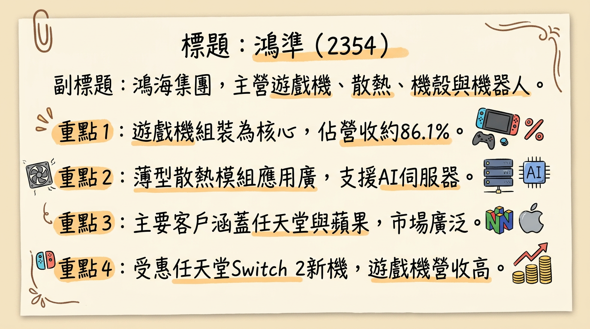
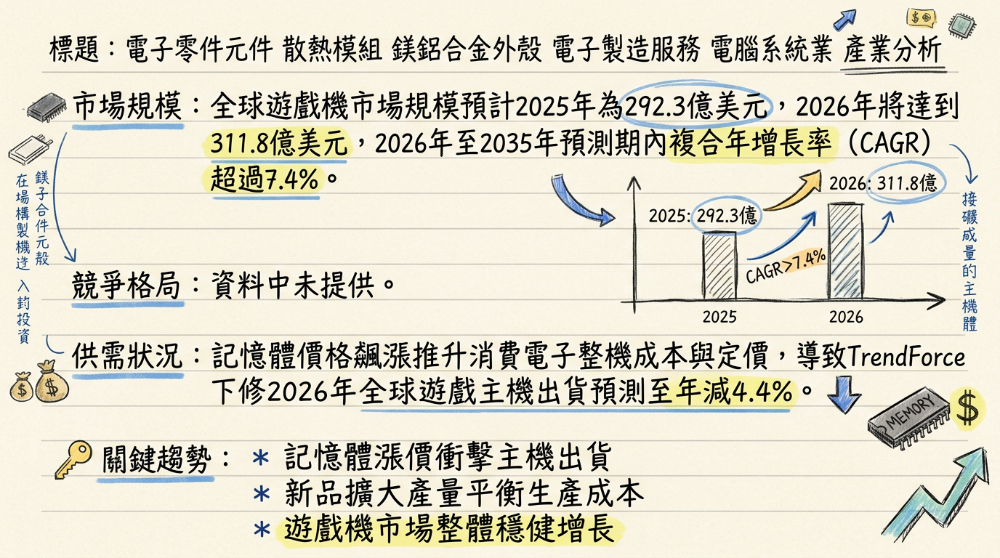
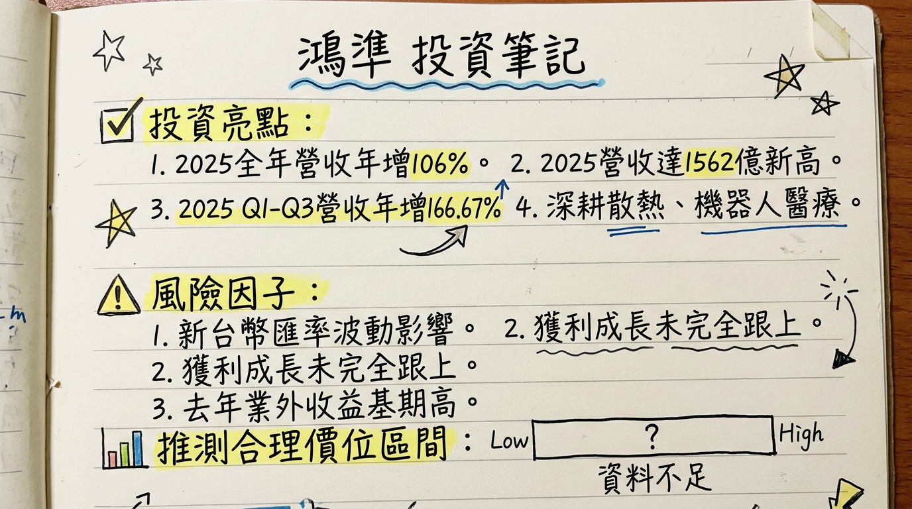

2354 鴻準 深度研究報告
一句話摘要
鴻準（2354）作為鴻海集團旗下重要成員，受惠於任天堂Switch 2新機上市，2025年營收創歷史新高1562億元，年增106%。然獲利成長幅度受匯率波動與業外因素影響，未能完全跟上營收增幅。公司正積極轉型，透過美國新廠強化全球供應鏈，並深度佈局AI伺服器散熱與機器人等高成長領域，目標從製造商升級為科技解決方案夥伴，展望2026年營運抱持審慎樂觀態度。
公司概覽
鴻準（2354）主要從事電子零件元件、散熱模組、鎂鋁合金外殼、電子製造服務及電腦系統業，為鴻海集團旗下公司。其核心產品與服務包括：
遊戲機組裝： 為主要營收貢獻來源，特別受惠於任天堂Switch 2等新機的熱銷。
散熱模組： 產品應用廣泛，涵蓋資料中心、高效運算（HPC）、行動裝置及AI伺服器等領域，並提供薄型熱管與均熱板等解決方案。
輕金屬機殼及機構件： 主要為Apple iPhone、iPad及Macbook的機殼製造商，也應用於Edge AI、機器人機構件及汽車零組件等多元場域。
機器人： 聚焦於服務型及人型機器人的製造、組裝與關鍵零組件開發，並將智能產品延伸至各場域的整合服務。
營收結構（2025年前三季）
| 業務類別 | 營收佔比（約） | 備註 |
|---|
| 遊戲機 | 86.1% | 受客戶新產品上市強勁拉貨需求驅動，佔比大幅提升（2024年同期為70.7%）。 |
| 散熱模組 | 8.4% | 相較2024年同期19.9%下降，主因遊戲機營收基數顯著擴大，非絕對營收減少。 |
| 機殼 | 3.9% | 相較2024年同期9.1%下降。 |
| 其他 | 1.6% | |
| 總計 | 100% | 遊戲機業務為主要營收動能，散熱與機殼業務仍為重要組成，機器人等新興業務積極佈局中。 |
製造基地
鴻準已啟動全球供應鏈重組佈局，於2025年8月7日公告將斥資總額10億美元的戰略投資計畫，在美國肯塔基州路易維爾設立首座工廠，旨在就近服務北美客戶，推動智慧製造與人工智慧應用。
公司在2024年10月30日亦有中國的煙台富准及佛山全億大兩廠區獲得UL2799廢棄物零填埋認證。目前未找到各製造基地的具體營收貢獻比例。
核心競爭優勢
- 鴻海集團資源優勢： 作為鴻海集團成員，享有龐大的製造規模、全球供應鏈管理經驗、研發資源及客戶關係支持。
- 遊戲機領導地位： 為日系遊戲機大廠（如任天堂Switch系列）的主力組裝供應商，具備關鍵客戶的穩定訂單來源。
- 多元化技術佈局： 在輕金屬機殼、散熱模組（薄型熱管、均熱板、水冷）、機器人與智慧製造等多領域擁有成熟技術與研發實力。
- AI與高效運算（HPC）整合： 積極佈局AI伺服器散熱解決方案，已通過NVIDIA GB200伺服器機架風扇散熱認證，有望受惠於AI產業爆發性成長。
- 全球供應鏈韌性： 透過在美國設立新廠，推動智慧製造與在地化生產，強化全球供應鏈彈性與服務北美客戶的能力。
- 新興市場卡位： 在服務型及人型機器人、電動車機構件等新興高成長領域提前佈局，奠定中長期成長基礎。
財務分析
月營收趨勢
| 月份 | 金額（新台幣億元） | 月增率 MoM | 年增率 YoY |
|---|
| 2026年2月 | 72.02 | -46.20% | -23.50% |
| 2026年1月 | 133.91 | -3.32% | 57.49% |
| 2025年12月 | 138.51 | 0.15% | -8.56% |
| 2025年11月 | 138.30 | -7.29% | 20.76% |
| 2025年10月 | 149.18 | 15.08% | 127.01% |
| 2025年9月 | 129.63 | -6.09% | 131.26% |
季度數據
| 季度 | 季營收（新台幣億元） | 毛利率 | 營業利益率 | EPS (元) |
|---|
| 2025年第三季 | 約423.3 | 3.62% | 1.40% | 0.62 |
| 2025年第四季 | 尚未公布 | 尚未公布 | 尚未公布 | 尚未公布 |
年度趨勢
| 年度 | 全年營收（新台幣億元） | 年增率（YoY） | 全年EPS（元） |
|---|
| 2024年實際 | 未提供 | 未提供 | 2.53 |
| 2025年實際 | 1562 | 106% | 未提供 |
| 2025年預估 | - | - | 2.40 ~ 2.57 |
| 2026年預估 | - | - | 3.47 |
法說會重點 (2025年12月31日)
- 召開日期： 2025年12月31日。
- 營運概況與展望： 管理層對2025年下半年營運抱持「審慎樂觀」態度，並對2026年營運期盼能愈來愈好，強調2026年展望未變。公司將聚焦遊戲機、機殼、散熱及機器人四大業務，並致力於從單純零組件製造商轉型為科技解決方案合作夥伴。
- 遊戲機業務： 2025年前三季遊戲機營收佔比大幅提升至86.1%（2024年同期為70.7%），受惠於日系遊戲機大廠新產品上市的強勁拉貨需求。公司強調遊戲機產品的記憶體採購由客戶負責，目前2026年接單能見度與展望未見重大變化，記憶體短缺與漲價影響仍在可控範圍內。
- 散熱模組業務： 為鴻準積極發展的方向，產品廣泛應用於資料中心、AI伺服器及高效運算領域。管理層表示，若客戶需求穩定提升，公司可配合擴產。公司更在乎獲利「絕對數字」，目標是遊戲機與散熱的獲利絕對金額在2026年都能比2025年更好。
- 機殼與機器人： 輕金屬機殼業務持續服務成熟客戶，應用於Edge AI、機器人機構件及汽車零組件等。機器人業務聚焦服務型及人型機器人的製造、組裝與關鍵零組件開發，並將智能產品延伸至各場域的整合服務。
- 獲利與匯率影響： 2025年前三季營收年增166.67%，但受到2025年第二季新台幣匯率波動（升值）影響獲利，第三季匯率回穩後每股盈餘（EPS）已回溫至0.62元，合併淨利為新台幣23.7億元（年減10.62%），主要亦受去年同期較高的一次性業外收益基期所致。
- 資本支出與產能： 公司不提供具體資本支出數字，但指出主要集中在工廠建設與投資（包含遊戲機、散熱、輕金屬的廠區及製程投資）以及先進技術與自動化設備的投入。董事會於2025年通過總額達10億美元的十年戰略投資計畫，用於美國肯塔基州路易維爾設立新廠，強化智慧製造與全球供應鏈能力，預期明年落成後會有充足的使用效率。
券商觀點
目標價與評等
| 券商名稱 | 目標價（新台幣元） | 評等 | 日期 | 備註 |
|---|
| 英為財情（一位分析師） | 54.00 | 強力賣出 | (最新) | 評級共識基於一位分析師的洞察。 |
| 美系外資 | 115.00 | 加碼（減碼上調） | 2024年11月7日 | 過時 |
| K.S.量化投資 | 100.00 | 中期合理價預估 | 2025年8月5日 | 過時 |
2025-2026年EPS預估
- 法人普遍預估： 2025年度EPS約落在2.40元至2.57元之間。
- 英為財情（一位分析師）： 預估2025年EPS為2.57元，2026年EPS為3.47元。
- 萬寶週刊： 研判2025年EPS可挑戰5元（此預估值顯著高於其他法人預期）。
財報深度分析
利潤率趨勢
| 季度 | 毛利率 | 營業利益率 | 稅後淨利率 |
|---|
| 2024年Q3 | 6.65% | 2.51% | 4.67% |
| 2024年Q4 | 4.01% | 1.74% | 2.37% |
| 2025年Q1 | 4.30% | 1.79% | 3.12% |
| 2025年Q2 | 2.97% | 0.95% | 1.29% |
| 2025年Q3 | 3.62% | 1.40% | 2.04% |
鴻準2025年前三季營收雖因遊戲機業務強勁拉貨而年增166.67%，但毛利率、營業利益率及稅後淨利率呈現下滑趨勢。主要原因有二：
產品組合變化： 遊戲機組裝業務雖然貢獻大量營收，但其屬性為代工，利潤空間相對較薄，拉低了整體毛利率百分比表現。2025年前三季遊戲機比重由2024年同期70.7%擴大至86.1%。
匯率波動與業外收益基期： 2025年第二季新台幣兌美元匯率升值劇烈，對獲利造成顯著匯兌損失，拉低當季利潤率。此外，2024年同期有較高的一次性業外收益基期，也使2025年合併淨利年減10.62%。第三季匯率回穩後，利潤率有小幅回升。
存貨分析
| 季度 | 存貨週轉天數 | 應收帳款週轉天數 |
|---|
| 2024年Q3 | 15.09 | 47.54 |
| 2024年Q4 | 7.39 | 52.05 |
| 2025年Q1 | 9.65 | 68.83 |
| 2025年Q2 | 8.48 | 49.53 |
| 2025年Q3 | 9.71 | 50.16 |
- 存貨狀況： 2024年Q4至2025年Q3的存貨週轉天數維持在較低水準（7.39天至9.71天），顯示公司在應對任天堂Switch 2備貨需求下，仍能有效控管存貨，並未出現異常堆積現象。
- 應收帳款狀況： 應收帳款週轉天數在2025年Q1上升至68.83天，可能與該季營收大幅增長後的收款週期有關，隨後在Q2、Q3回落並穩定在約50天左右，顯示收款能力已恢復正常。
資本支出
鴻準董事會於2025年通過十年戰略投資計畫，總投資金額估計約10億美元，聚焦於精密模具開發、智慧製造、機器人技術以及先進自動化工業解決方案，並在美國肯塔基州路易維爾設立首座工廠。主要資本支出集中於新廠房建設與現有廠區優化，以及先進製程技術與自動化設備的投入。
其他財務重點
- 負債比率： 2024年Q1為20.44%，至2025年Q2上升至41.33%，Q3回落至35.83%。負債比率有所上升可能與擴張期的資本支出需求有關。
- 業外收支： 2025年獲利受到新台幣匯率升值影響，以及去年同期較高的一次性業外收益基期導致合併淨利年減。2026年1月報導提及鴻準出售群創光電持股。
股權異動
- 董監事/大股東申報轉讓： 未找到2024-2026年董監事/大股東的申報轉讓紀錄。先前有2024年底鴻海旗下寶鑫國際投資處分鴻準持股1萬4053張的事件，但股價很快回穩。
- 庫藏股買回： 未找到2024-2026年的庫藏股買回紀錄。
- 可轉換公司債（CB）： 未找到2024-2026年發行可轉換公司債的資訊。
- 現金增資或減資： 未找到2024-2026年現金增資或減資計畫的資訊。
股利政策
| 年度 | 現金股利（元） | 股票股利（元） | 除息日期 | 現金發放日 |
|---|
| 2024年度 | 1.5 | 0.00 | 2024年7月2日 | 2024年7月31日 |
| 2025年度 | 1.4 | 0.00 | 2025年7月2日 | 2025年7月31日 |
鴻準近年來持續發放現金股利，未發放股票股利。
產業分析
市場規模與成長率
| 產業類別 | 2025年市場規模 | 2026年市場規模 | 2026-203X CAGR | 備註 |
|---|
| 全球遊戲機市場 | 292.3億美元 | 311.8億美元 | >7.4% (至2035年) | (含軟硬體) |
| 全球遊戲主機市場 | 153.5億美元 | 158.7億美元 | 3.43% (至2035年) | (僅硬體) |
| 液冷零組件市場 | 40-130億美元（潛在） | (部分與AI伺服器重疊) | 35% (2024-2027年) | Vertiv預估液冷營收年複合成長率 |
| 消費性電子產品 | 7,882.3億美元 | (約8,193億美元) | 3.94% (2025-2032年) | 另有報告預估CAGR 2.8% (至2034年) |
| 專業服務機器人 | 735.4億美元 | 938.5億美元 | 27.6% (2025-2026年) | 預計CAGR 19.80% (至2034年) |
| 全球人型機器人 | 6億美元 | (約9.3億美元) | 56% (2025-2030年) | 2026年出貨量可望突破5萬台，年增逾700% |
供需與毛利率水準
| 產業類別 | 供需狀況 | 產業平均毛利率水準 |
|---|
| 遊戲機 | 供： 記憶體價格飆漲導致整機成本拉升，衝擊消費市場。TrendForce已下修2026年全球遊戲主機出貨預測至年減4.4%。新Switch 2雖有新品紅利，但任天堂仍面臨生產成本壓力。Sony、Microsoft主機恐因記憶體成本過高而難以執行降價策略，甚至需調漲售價。需： 新機（如Switch 2）上市帶動換機潮。 | 組裝代工毛利率預計相對有限，與宏碁遊戲代理事業毛利率接近（約10%以下）。 |
| 散熱模組 | 供： AI伺服器需求持續暢旺，尤其NVIDIA GB300伺服器將擔綱主要出貨動能，推升散熱產值。2025年散熱廠商營收與毛利率上揚來自AI伺服器需求成長，GB200量產將推升液冷營收。需： AI伺服器帶動高階半導體封裝、散熱產品需求大幅成長，均熱片、水冷模組出貨樂觀看待。液冷營收預計2024-2027年年複合成長35%。 | 預期2025年奇鋐、雙鴻、健策毛利率將分別上揚至25%、28%、29%。 |
| 輕金屬機殼 | 供： 半導體短缺導致供應鏈受限，影響近80%的電子製造商。需： 消費電子市場受技術進步、消費者需求增加、可支配收入提高及智能設備普及驅動。AI技術深度賦能、產品形態創新迭代及政策市場協同，為行業發展築牢根基。 | 消費電子零部件及組裝板塊2025年前三季度毛利率為10.40%。 |
| 機器人（服務型/人型） | 供： 人型機器人產業正由「技術展示」走向「實務驗證」，核心競爭點從單純運動能力轉移至系統整合、場景落地。中國人型機器人產業呈現「場景多元」、「價格分層」特徵。需： 自動化需求增加、勞動力短缺以及醫療保健領域對專業機器人需求激增，是推動服務機器人市場增長的主要因素。2026年將是人型機器人邁向商用化的關鍵年，全球出貨量可望突破5萬台，年增逾700%。 | 機器人製造業毛利率未直接提供，但機器人即服務（RaaS）市場預計複合年成長率為17.3% (2024-2030年)。 |
競爭格局
| 業務類別 | 主要競爭對手 | 鴻準vs競爭對手比較 | 台灣同業比較（營收/毛利率/EPS） |
|---|
| 遊戲機組裝 | 鴻準 (任天堂Switch 2主要供應商) | 產能： 鴻準具龐大且彈性之供應鏈及自動化生產優勢，且具備新世代遊戲機組裝技術。競爭： 任天堂主要客戶，合作關係穩固。客戶群： 產品專注於單一客戶任天堂Switch系列。毛利： 代工毛利較低，營收成長幅度受遊戲機生命週期影響。 | 宏碁遊戲（6908）：主要為遊戲主機代理及遊戲美術代工，與鴻準硬體組裝性質不同。2025全年自結營收55.2億元，毛利率約10%。 |
產業趨勢
1. 影響該產業的關鍵技術趨勢和具體影響
*
具體影響： AI與HPC的發展對散熱模組產業帶來革命性影響。AI晶片算力需求大幅提升，導致熱設計功耗（TDP）快速攀升，傳統氣冷散熱已無法滿足需求，液冷技術（水冷板、均熱片、浸沒式散熱等）成為AI伺服器散熱主流方案。NVIDIA GB300和Rubin GPU的TDP高達千瓦級，推動微通道液冷等次世代散熱技術。此外，AI技術深度賦能將驅動消費電子產品創新週期，取代傳統硬體迭代，成為增長主引擎。AI也是機器人智能化、自主化和實現更複雜任務的關鍵，大型行為模型（LBM）和大語言模型（LLM）使機器人能夠學習和自然互動，推動人型機器人從「技術展示」走向「實務驗證」。
*
具體影響： 消費電子產品追求更輕薄、更堅固、更美觀的設計，推動輕金屬機殼的材料創新（如鎂鋁合金）和精密加工技術的發展。同時，機殼不僅是保護作用，更需整合天線、散熱、感測器等功能，例如Apple iPhone、iPad及Macbook的機殼製造商需不斷提升技術。電動車對輕量化需求迫切，輕金屬機構件應用於電池組、車身結構等領域，是未來的重要增長點。機器人，特別是人型機器人，對輕量化、高強度和高整合度的機構件需求日益增加，以提升移動性和操作靈活性。
*
具體影響： RaaS提供彈性的訂閱模式，降低企業導入機器人的前期資本投入和風險，使其更易於採用。此模式特別吸引零售、物流、醫療保健和製造業等預算有限但自動化需求高的產業。雲端基礎的機器人技術、遠端監控和AI主導的軟體更新正在為RaaS生態系統提供動力，使企業能夠動態擴展其機器人團隊。
2. 對鴻準而言的具體機會和威脅
*
AI伺服器散熱商機： 受惠於AI伺服器對高階液冷散熱方案的強勁需求，提升產品單價和毛利率。
* 任天堂Switch 2熱銷： 作為主要組裝廠，可望持續受惠於新機（Switch 2）熱銷，穩固遊戲機業務營收貢獻。
* Apple產品線需求穩定： 作為Apple輕金屬機殼供應商，隨著Apple產品持續創新和出貨量保持穩定。
* 機器人產業發展初期卡位： 在服務型及人型機器人製造、組裝與關鍵零組件開發的佈局，有機會在產業發展初期搶佔市場份額，並受惠於長期增長潛力。
* 集團資源整合優勢： 享有鴻海集團在技術、產能、供應鏈管理和客戶關係的強大支持。
* 電動車輕量化趨勢： 輕金屬機殼業務可將應用延伸至電動車零組件，抓住電動車輕量化對機構件的需求。
*
遊戲機市場成本壓力： 記憶體價格飆漲導致遊戲主機硬體成本上升，可能影響定價和出貨，進而壓縮組裝業務毛利。
* 消費電子市場競爭激烈： 輕金屬機殼市場競爭激烈，價格壓力大，且客戶集中度高（Apple），易受單一客戶訂單波動影響。
* 全球經濟不確定性： 全球經濟放緩或衰退可能衝擊遊戲機和消費電子產品需求。
* 地緣政治與供應鏈風險： 供應鏈不穩定以及地緣政治緊張可能導致關鍵零組件短缺或成本上升。
* 新興技術挑戰： 散熱模組和機器人領域新技術不斷湧現，需要持續投入研發以保持競爭力。
3. 相關投資題材的具體連結
*
散熱模組： AI伺服器和HPC對高效能液冷散熱模組需求爆發，鴻準散熱業務直接受惠。
* 機器人： AI是驅動服務型及人型機器人發展的核心技術，鴻準機器人業務與AI發展緊密連結。
* 消費電子機殼： AI晶片整合使消費電子智能化，對機殼散熱設計和內部結構提出更高要求。
*
散熱模組： HBM高功耗導致的發熱問題，對散熱解決方案要求更高，鴻準AI伺服器散熱業務間接受惠。
*
輕金屬機構件： 電動車追求輕量化，對輕量化、高強度的鎂鋁合金機構件需求增加，鴻準輕金屬機殼業務可望延伸至電動車零組件。
*
消費電子機殼與散熱： 智能家居設備和邊緣AI應用普及，對具備美觀、輕巧、高效散熱且堅固的機殼和機構件需求增加。
近期催化劑
- 2025年12月31日 法說會： 管理層對2026年營運抱持「審慎樂觀」態度，強調聚焦遊戲機、散熱、機殼、機器人四大業務，並致力於追求獲利絕對金額的成長，非單純營收佔比。
- 2026年1月6日 2025年全年營收： 公告2025年全年營收達新台幣1,562億元，年增106%，創歷史新高，主要受惠於日系遊戲機大廠任天堂Switch 2問世帶動強勁拉貨動能。
- 2026年1月 法人分析： 任天堂Switch 2備貨需求為鴻準營收大增主要驅動力，作為Switch 2主要機殼供應商，相關出貨動能強勁。
- 2026年2月5日 2026年1月營收： 公布合併營收133.91億元，年增57.49%，月減3.32%。
- 美國10億美元戰略投資計畫： 於2025年8月7日董事會通過，將於美國肯塔基州路易維爾設立首座工廠，強化智慧製造與全球供應鏈能力，就近服務北美客戶，推動產品線多元化。
- 永續發展肯定： 獲選納入「台灣永續指數」成分股 (2025年7月4日)，中國廠區獲UL2799廢棄物零填埋鉑金級及金級認證 (2024年10月30日)。
⭐ 成長動能時間軸
| 動能類別 | 具體事項 | 時間點 |
|---|
| 擴廠計畫 | 美國肯塔基州路易維爾廠區： 董事會通過總額10億美元十年戰略投資計畫，定位為多元產品製造基地，旨在深化北美市場在地供應與技術合作，提升整體「使用效率」與坪效。 | 2025年8月7日公告，2026年起陸續啟動/量產 |
| 新客戶/市場 | 機器人： 已向全球四大機器人廠送樣，主攻人形與服務型機器人零組件。 | 預計2025年開始出貨 |
| AI伺服器散熱： 通過NVIDIA GB200伺服器機架風扇散熱認證。 | 預計2025年啟動量產 |
| 蘋果機器人： 供應鏈傳出，蘋果最快於2026年推出結合類iPad顯示器及機器手臂的桌上型機器人，鴻準成為首家台灣協力廠，負責機構件與機殼相關開發。 | 最快2026年推出 |
| AI水冷散熱片： 與美系客戶合作開發。 | 預計2026年正式量產出貨 |
| 無人機次動力系統： 與整機廠合作開發。 | 預計2026年送樣認證 |
| 長期佈局： 強化產品線多元化，將重心放在邊緣AI設備、能源儲存與智慧機器人解決方案，延伸至智慧照護、醫療、電動車與儲能等應用。 | 未來3-5年 |
| 資本支出增加 | 10億美元投資計畫將聚焦精密模具、智慧製造、機器人技術、先進自動化工業解決方案，深度整合AI人工智慧，建構AI驅動的智慧平台，以提升生產效率並降低營運成本。主要用於新廠房建設（特別是美國廠）與現有廠區優化，以及先進製程技術與自動化設備的投資。 | 2025年董事會通過，長期性投資 |
| 產能擴充 | 散熱模組： 若客戶需求穩定且提升，公司將評估擴產因應，並提供薄型熱管與均熱板等提升熱交換效率的方案。美國廠： 定位為多元產品製造基地，旨在靈活調度全球產能並實現關鍵零組件在地化生產。 | 依市場需求動態調整，美國廠則依計畫時程 |
| 需求面 | 遊戲機： 任天堂Switch 2上市後的強勁需求，為2025年營收爆發性成長的主因。市場預估任天堂在2026年3月底前將生產多達2,500萬台Switch 2，將刷新該公司遊戲機上市首年的銷售紀錄。 | 2025年~2026年持續強勁 |
| AI伺服器： 搭上高階AI伺服器需求成長的趨勢，鴻準將與鴻海集團合作擴大液冷散熱技術應用。 | 持續成長 |
| AR/VR： 看好AR/VR需求升溫，小型金屬遮罩及8.6代支撐條訂單仍具成長潛力。 | 展望2026年 |
| 新興材料應用： 持續導入環保可回收鋁鎂合金，結合半固態成型技術，應用於儲能系統與汽車零組件。同時掌握鈦合金、鎢合金等特殊材料燒結技術，應用於高毛利的運動產業與汽車產業。 | 持續發展 |
2026 展望
成長動能
- 遊戲機業務穩定基石： 任天堂Switch 2的強勁出貨動能將持續至2026年，預計為鴻準營收貢獻提供堅實基礎。
- AI伺服器散熱爆發： 成功切入NVIDIA GB200伺服器散熱供應鏈並與美系客戶合作開發AI水冷散熱片，預計2026年量產，將顯著推升散熱業務的營收與毛利率。液冷技術的市場擴張將成為主要增長點。
- 機器人新藍海： 供應全球四大機器人廠零組件，並傳出與蘋果合作開發桌上型機器人，有望在人型與服務型機器人市場爆發初期取得先機。此業務具有高成長潛力，且產品價值與毛利率預期較高。
- 美國新廠效益發酵： 耗資10億美元的美國肯塔基州新廠將於2026年起逐步發揮多元製造基地功能，深化北美市場在地供應鏈，提升供應鏈韌性並可能為高價值產品帶來新訂單。
- 多角化佈局效益： 輕金屬材料技術應用延伸至電動車零組件、儲能系統及高毛利運動產業，加上無人機次動力系統的送樣認證，有助於分散營收來源，降低對單一產品線的依賴。
風險因子
- 獲利能力挑戰： 儘管營收大幅成長，2025年前三季獲利成長幅度未完全跟上，受匯率波動及業外因素影響。未來毛利率、營業利益率和淨利率的改善將是關鍵。
- 客戶集中度高： 遊戲機業務佔營收比重達86.1%，若主要客戶新產品週期結束或市場競爭加劇，可能對營運造成較大衝擊。
- 新興業務轉換期： AI散熱與機器人等新興領域雖具高成長潛力，但初期投入成本高，且技術發展與市場接受度仍需時間，短期內對整體獲利的顯著貢獻仍待觀察。
- 資本支出與現金流壓力： 10億美元的美國廠投資計畫帶來長期效益，但也意味著較大的資本支出需求。需關注其營運活動現金流是否能有效支撐投資，或是否需頻繁籌資。
- 產業競爭激烈： 金屬結構件市場競爭者眾多（如可成、正崴、Jabil Circuit），散熱模組亦有奇鋐、雙鴻等強勁對手。機器人領域也有Tesla、宇樹科技等領先者，鴻準需持續投入研發以保持競爭力。
- 總經風險： 全球經濟不確定性、通膨、利率變動、地緣政治（特別是美中貿易關係）及匯率波動，都可能影響消費者購買意願、供應鏈穩定性及公司獲利。
投資結論
營收成長動能明確，但獲利轉型為關鍵： 鴻準受惠於任天堂Switch 2的強勁需求，2025年營收創歷史新高，預期此動能將延續至2026年。然而，遊戲機代工的低毛利特性，以及匯率波動和業外因素影響，使得公司在營收增長的同時，面臨獲利能力提升的挑戰。轉型高毛利的AI伺服器散熱和機器人業務，將是未來獲利成長的關鍵。
新興業務佈局具潛力，但需觀察執行成效： 鴻準在AI伺服器液冷散熱、服務型及人型機器人領域的積極佈局，尤其切入NVIDIA GB200供應鏈及與蘋果機器人合作的傳聞，顯示公司正抓住未來科技趨勢的巨大商機。美國新廠的投資也展現了強化全球供應鏈的決心。這些新業務若能成功放量且提升毛利率，將大幅優化公司的產品組合和獲利結構。
財務結構穩健，但資本支出與現金流管理需關注： 雖然公司負債比率有所上升，但仍在可控範圍，存貨週轉天數也顯示良好的管理能力。然而，10億美元的長期資本支出計畫，對公司的現金流管理將是一大考驗。投資人需持續關注未來財報中營運活動現金流的表現。
評價分析與目標價區間建議： 考量公司在遊戲機業務的穩定基石，AI伺服器散熱和機器人等高成長領域的策略佈局，以及美國新廠的長期效益，但同時需面對獲利能力轉型、客戶集中度及產業競爭挑戰。基於2026年預估EPS約3.40-3.47元，並給予合理成長型企業P/E區間（考量其轉型潛力與部分高毛利業務貢獻，給予19-25倍P/E），建議鴻準的目標價區間為65元至87元。
本報告由 AI 自動產生，資料來源為公開網路資訊，僅供參考，不構成投資建議。產生時間：2026-03-06 13:37
📊 資訊卡


